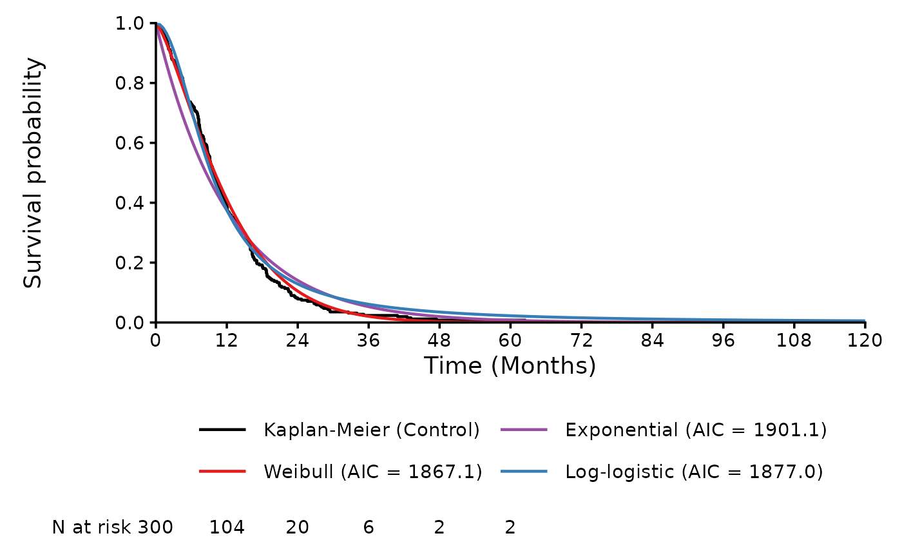
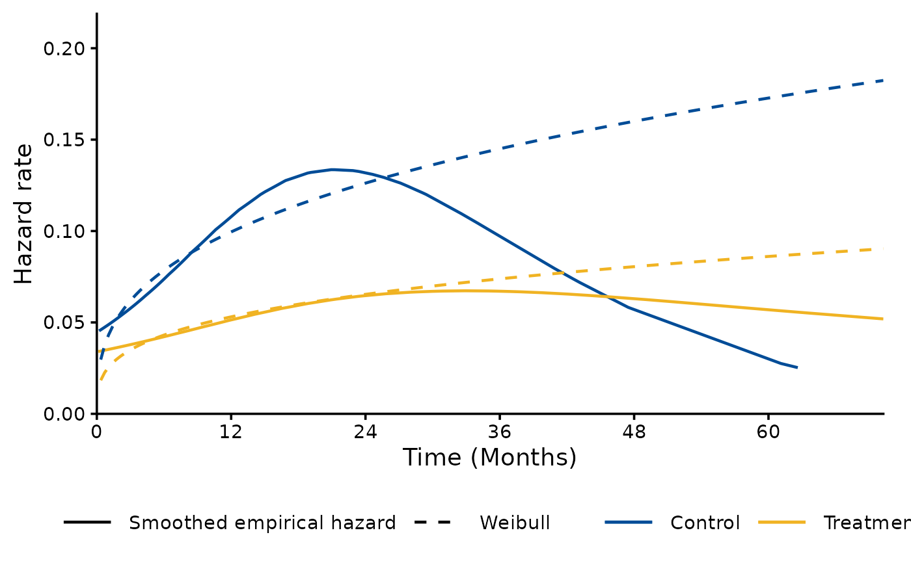

Plot the Survival Models Fitted by fit_survival_models()
Source:R/plot.survfitsummary.R
plot.survfitsummary.RdThe plot() method of the object returned by
fit_survival_models: plots the fitted survival curves with
plot_survival_fits (type = "survival", the default)
or the fitted hazards with plot_hazard_fits
(type = "hazard"). These functions plot either one arm with one
or more models or one model with one or more arms, so with neither
arms nor a single model given, the models of the control arm (the
first arm) are plotted.
Arguments
- x
Object returned by
fit_survival_models.- type
"survival"(the default) or"hazard".- models
NULL(the default, all fitted models offit_type) or model labels as inx$models$model.- arms
NULL(the default: all arms with a single model, otherwise the control arm) or the arms to plot.- ...
Other arguments of
plot_survival_fitsorplot_hazard_fits, for examplefit_type,conf_int,time_horizon,coloursorlegend_position.
Value
The plot returned by plot_survival_fits or
plot_hazard_fits (a ggplot or patchwork object), drawn
when it is printed.
Examples
dat <- processing_dataset(
system.file("extdata", "fit_example.csv", package = "SurvFitSummary"),
column_arm = "TRT01P", column_survtime = "AVAL", column_cnsr = "CNSR",
control_arm = "Control"
)
fits <- fit_survival_models(dat, distributions = c("exp", "weibull",
"llogis"),
spline_scales = NULL)
plot(fits, time_horizon = 120)

plot(fits, type = "hazard", models = "Weibull")
